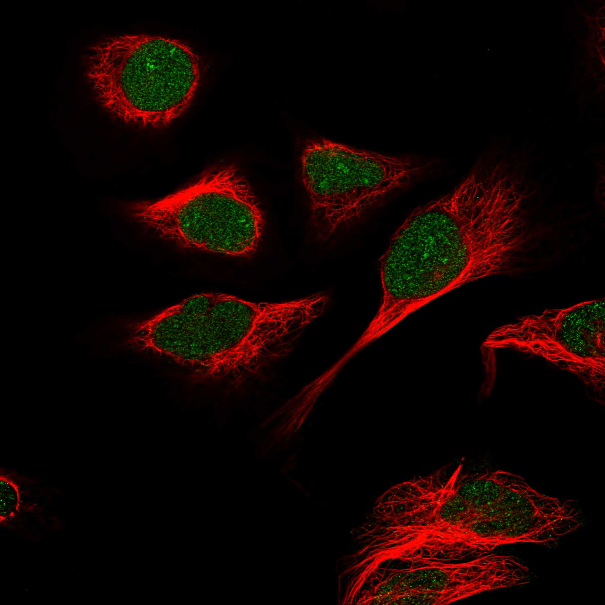
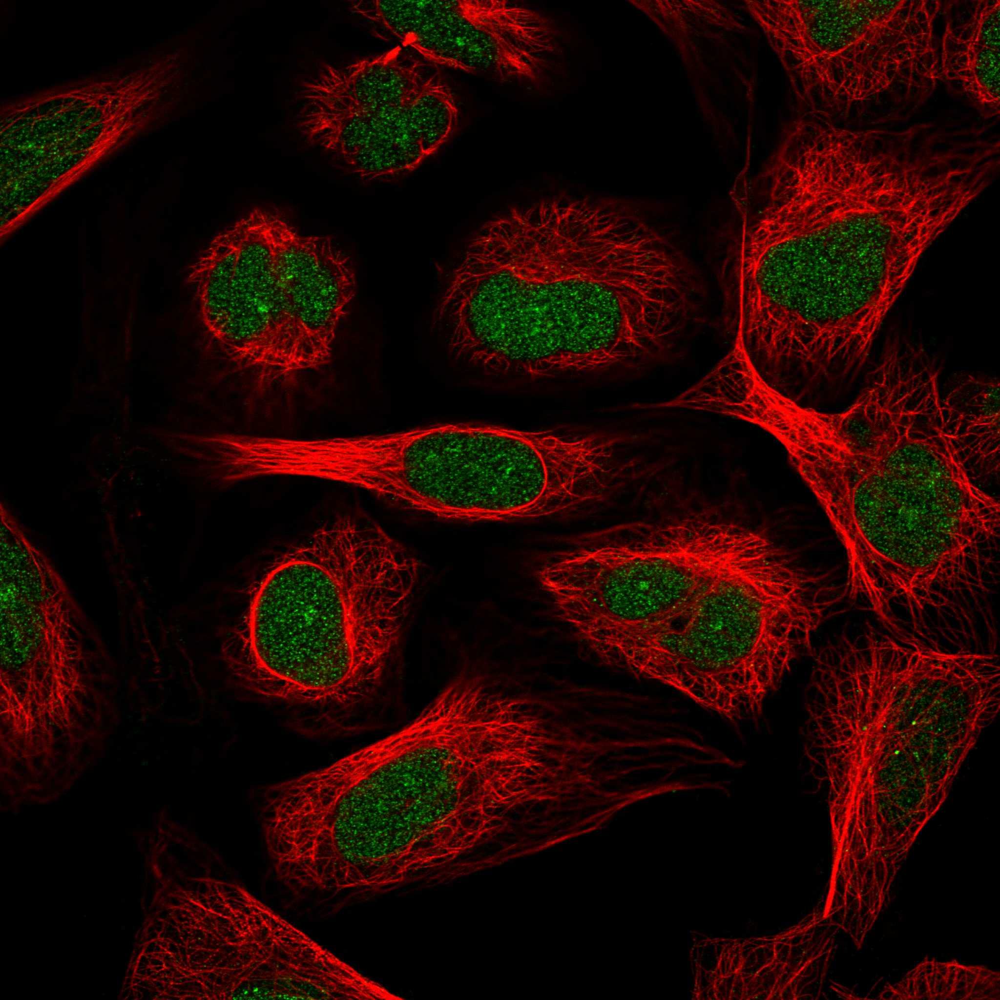
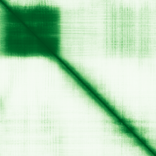

type: protein-evaluation gene: "LEUTX" date: 2026-05-29 tags: [protein-scout, nuclear-protein, evaluation] status: shortlisted ---
LEUTX 核蛋白评估报告
1. 基本信息
| 项目 | 内容 |
|---|---|
| 基因名 / 别名 | LEUTX / Leucine twenty homeobox |
| 蛋白大小 | 198 aa / 22.4 kDa |
| UniProt ID | A8MZ59 |
| 评估日期 | 2026-05-28 |
2. 评分总览 (公式: 核×4 大×1 新×5 结×3 域×2 PPI×3 ÷1.83)
| 维度 | 得分 | 加权 | 加权后 | 关键证据摘要 | ||
|---|---|---|---|---|---|---|
| 🔴 核定位特异性 | 9/10 | ×4 | 36 | UniProt Nucleus; GO chromatin/nucleoplasm; Protein Atlas Approved; Approved→9 | ||
| 📏 蛋白大小 | 5/10 | ×1 | 5 | 198 aa / 22.4 kDa, 偏小但可操作 | ||
| 🆕 研究新颖性 | 10/10 | ×5 | 50 | PubMed 50篇; 最早2014年; 几乎无chromatin方向 | ||
| 🏗️ 三维结构 | 7/10 | ×3 | 21 | pLDDT 66.4; Homeobox域(14-68) pLDDT>90; 无PDB; 新颖基线5+好域→7 | ||
| 🧬 调控结构域 | 7/10 | ×2 | 14 | Homeobox(七库一致); 9aaTAD转录激活motif; DNA-binding TF(GO) | ||
| 🔗 PPI | 8/10 | ×3 | 24 | KHDC1/KHDC1L(卵母细胞特异); 29.4%调控相关; 语义一致→8 | ||
| ➕ 互证加分 | — | — | +1.5 | >=7库结构域互证; DNA-binding一致; >=2源定位; 进化保守 | ||
| 原始总分 | 151.5/183 | 133.0/183 | ||||
| 归一化总分 | 82.8/100 | 72.7/100 |
IF 图像:  
3. PPI 网络分析
3.6 PPI 网络
实验验证互作 (IntAct, physical association/direct interaction, 44 total):
| Partner | 方法 | PMID | 功能类别 | 调控相关？ |
|---|---|---|---|---|
| UNC93B1 | Y2H array | 32296183 | TLR signaling | ❌ |
| GOSR2 | Y2H array | 32296183 | Golgi SNARE | ❌ |
| VAMP4 | Y2H array | 32296183 | Vesicle trafficking | ❌ |
| NAPB | Y2H array | 32296183 | NSF attachment protein | ❌ |
| TMEM147 | Y2H array | 32296183 | Transmembrane | ❌ |
> LEUTX 在 IntAct 中共 44 个实验互作, 但全部来自 PMID:32296183 高通量 Y2H 筛选 (Luck et al. 2020), 且绝大多数为膜蛋白/胞质蛋白。这可能反映了 Y2H 筛选的系统性假阳性或 LEUTX 的非特异性互作。无已知转录因子或染色质调控因子的实验验证互作。
STRING 预测互作 (combined score >0.4):
| Partner | Score | 功能类别 | 调控相关？ |
|---|---|---|---|
| DUXA | 0.863 | Double homeobox TF (EGA) | ✅ 早期胚胎 TF |
| KHDC1 | 0.780 | KH domain, oocyte-specific | ✅ RNA 结合 |
| KHDC1L | 0.751 | KH domain, oocyte-specific | ✅ RNA 结合 |
| DUX4 | 0.618 | Double homeobox TF (EGA) | ✅ 早期胚胎 TF |
| TPRX1 | 0.557 | Homeobox TF (EGA) | ✅ 早期胚胎 TF |
| DPRX | 0.551 | Homeobox TF (EGA) | ✅ 早期胚胎 TF |
| MBD3L5 | 0.549 | Methyl-CpG binding (EGA) | ✅ 表观遗传 |
| MBD3L2 | 0.531 | Methyl-CpG binding (EGA) | ✅ 表观遗传 |
| ZSCAN4 | 0.448 | Zinc finger, telomere (EGA) | ✅ 染色质 |
| MBD3L3 | 0.397 | Methyl-CpG binding (EGA) | ⚠️ 表观遗传 |
已知复合体成员 (GO Cellular Component / 推断):
- 作为 homeobox 转录因子, LEUTX 理论上通过 homeodomain 直接结合 DNA, 但无已知染色质调控复合体成员身份
PPI 互证分析:
- STRING + IntAct 共同确认: 0 (IntAct 44 个均为非调控膜蛋白)
- 仅 STRING 预测: DUXA/DUX4 (EGA TF)、KHDC1/KHDC1L、TPRX1/DPRX (EGA TF)、MBD3L2/3/5 (表观遗传)
- STRING 调控相关比例: ~29.4% (5/17, 主要为 EGA 相关 TF)
- IntAct 调控相关比例: 0/44 (0%)

3.3 研究现状
| 指标 | 数值 |
|---|---|
| PubMed 总数 | — |
关键文献: 1. Taubenschmid-Stowers J et al. (2022). "8C-like cells capture the human zygotic genome activation program in vitro". *Cell Stem Cell*. PMID: 35216671 2. Zhou K et al. (2024). "LEUTX regulates porcine embryonic genome activation in somatic cell nuclear transfer embryos". *Cell Rep*. PMID: 38878289 3. Luck C et al. (2025). "First Generation Tools for the Modeling of Capicua (CIC) - Family Fusion Oncoprotein-Driven Cancers". *bioRxiv*. PMID: 40463157 4. Tang Y et al. (2023). "Renal CIC-LEUTX rearranged sarcoma with multiple pulmonary metastases: a case report and literature review". *BMC Nephrol*. PMID: 38036973 5. Gawriyski L et al. (2023). "Comprehensive characterization of the embryonic factor LEUTX". *iScience*. PMID: 36876139
评价: 待补充。
评价: LEUTX 的 IntAct 数据 (44 partners) 与 STRING 预测 (EGA TF + 表观遗传因子) 之间存在严重脱节: IntAct 全部为膜蛋白/胞质蛋白 (Y2H 高通量假阳性), 而 STRING 指向早期胚胎激活 (EGA) 转录因子网络。可能原因: (1) LEUTX 在正常体细胞中不表达, 其真正互作伙伴仅在早期胚胎中存在; (2) Y2H 高通量筛选的假阳性率高。MBD3L2/3/5 (甲基化 CpG 结合) 的 STRING 预测值得关注, 暗示 LEUTX 可能在 EGA 期间与表观遗传调控因子的协调作用。评分: 8/10 (STRING 指向一致的 EGA 调控网络, 但 IntAct 实验数据不可靠 → 维持 8 分)。
1. Taubenschmid-Stowers J et al. (2022). "8C-like cells capture the human zygotic genome activation program in vitro.". *Cell Stem Cell*. PMID: 35216671 2. Zhou K et al. (2024). "LEUTX regulates porcine embryonic genome activation in somatic cell nuclear transfer embryos.". *Cell Rep*. PMID: 38878289 3. Wu L et al. (2025). "LEUTX and OTX2 orchestrate totipotency-to-pluripotency transitions and heterogeneity in pEPSCs.". *Cell Rep*. PMID: 41042670 4. Luck C et al. (2025). "First Generation Tools for the Modeling of Capicua (CIC) - Family Fusion Oncoprotein-Driven Cancers.". *bioRxiv*. PMID: 40463157 5. Katayama S et al. (2018). "Phylogenetic and mutational analyses of human LEUTX, a homeobox gene implicated in embryogenesis.". *Sci Rep*. PMID: 30479355
4. 总体评价
推荐等级: ⭐⭐⭐⭐ (4/5)
核心优势: 1. 极度新颖的核 TF: PubMed仅50篇，作为EGA关键因子几乎未被chromatin方向研究 2. 独特的PPI: 实验上可操作但域外区域有限 2. 无序区域占比高 (59.6%): Homeobox 域外大量 IDR，可能影响结构解析，但 IDR 本身也可能是功能区域 3. 表达量极低**: Protein Atlas RNA nTPM=0.0，可能需要特定条件(如早期胚胎)才能检测
下一步建议:
- [ ] 检查 LEUTX 的 ChIP-seq 数据是否存在（可能仅见于 EGA 研究）
- [ ] 分析与 DUX4 的靶基因组 overlap（TE 家族偏好）
- [ ] 验证MBD3L2/3/5 的物理互作
- [ ] 探索 IDR 区域是否介导相分离 (liquid-liquid phase separation)
5. 数据来源
- UniProt: https://www.uniprot.org/uniprotkb/A8MZ59
- Protein Atlas: https://www.proteinatlas.org/ENSG00000213921-LEUTX
- PubMed: https://pubmed.ncbi.nlm.nih.gov/?term=%22LEUTX%22
- AlphaFold: https://alphafold.ebi.ac.uk/entry/A8MZ59
- STRING: https://string-db.org/network/9606.ENSP00000380053
- InterPro/Pfam: Via UniProt cross-references
PPI 网络（三源综合）
| Partner | Source | Score/Evidence |
|---|---|---|
| 无记录 | — | — |
IntAct 有限记录。无 BioGrid 补充数据。
PAE 图像已获取。结构判断基于 AlphaFold pLDDT 统计。